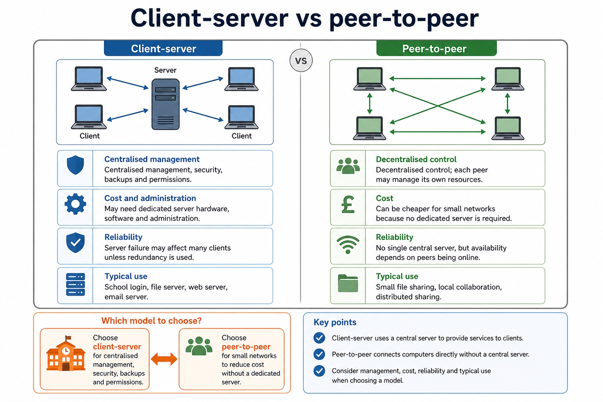
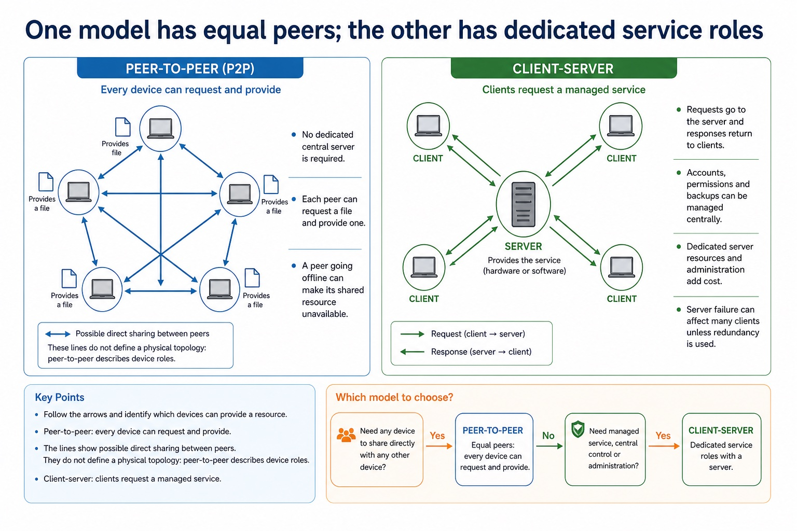
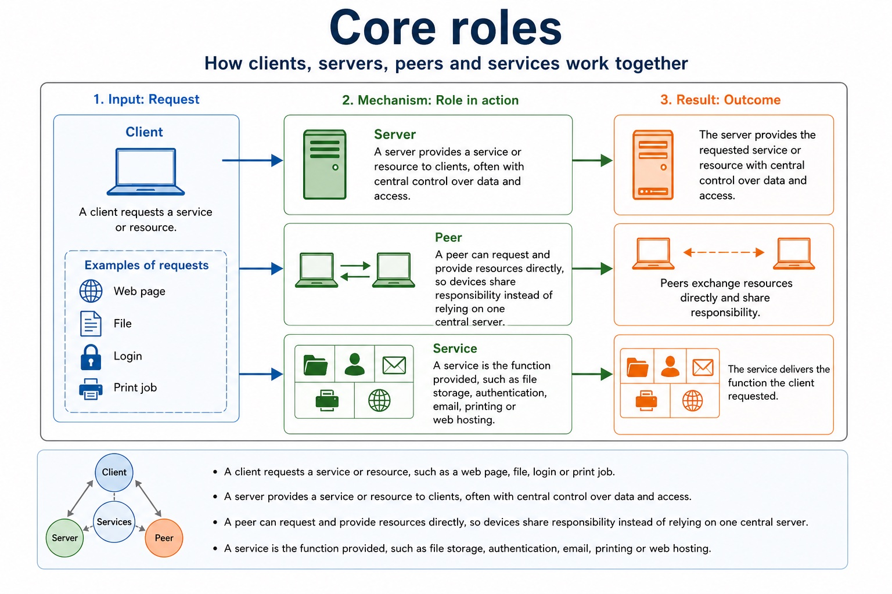
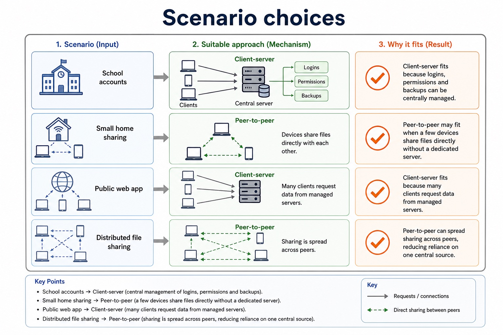
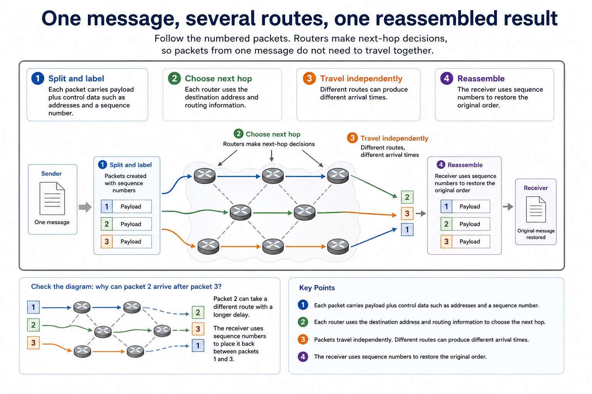
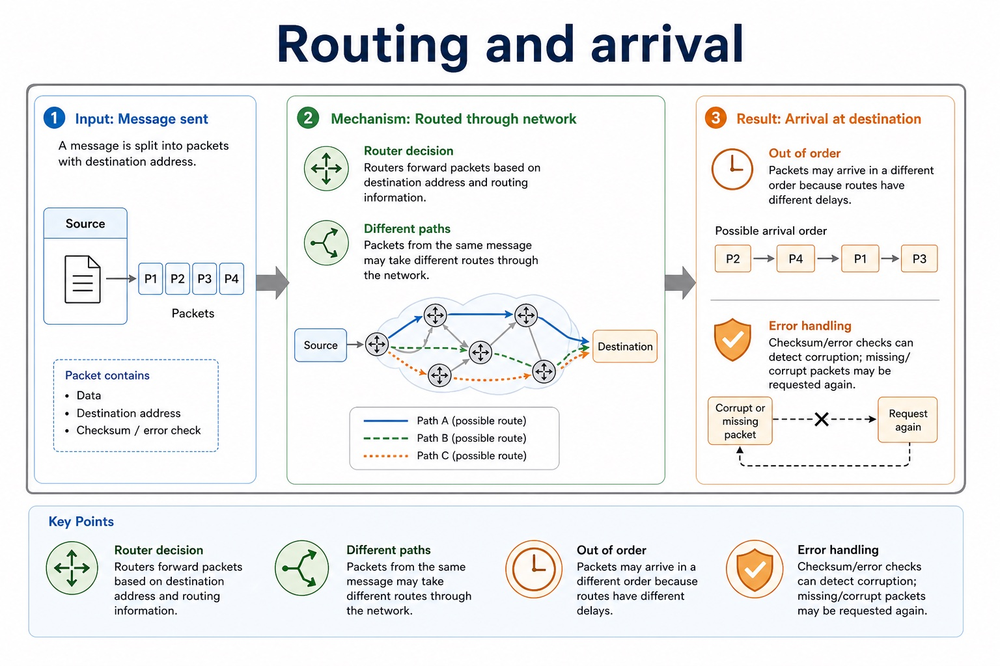
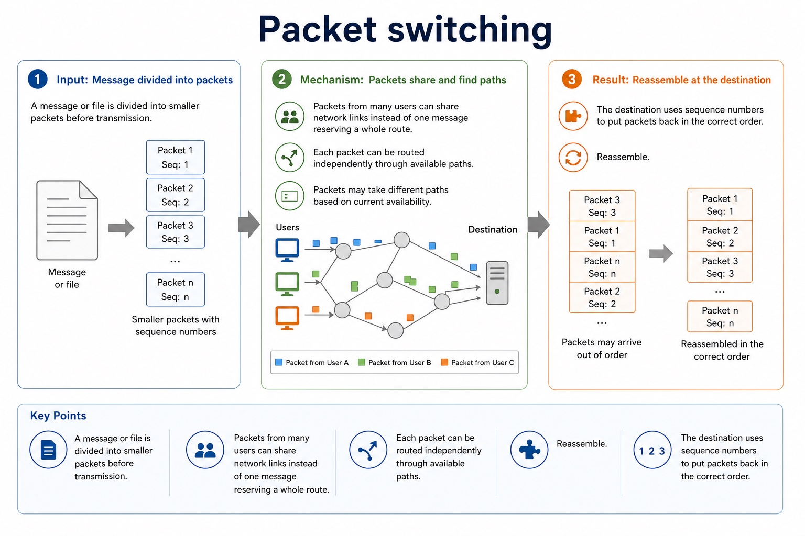

Cambridge AS9618 | Paper 1 | Section 2: Communication
Network topologies and packet transmission
Flexible-depth lesson
S2.04, S2.05 | Learn from the diagrams, test the method, then choose the practice you need.
Choose a Quick, Full or Deep route
Quick route
Use the diagnostic, learning objectives, first worked example and foundation question. Stop once the learner can explain the central distinction accurately.
Full route
Use every knowledge-point material set, the worked method, the terminology check and all questions.
Deep route
Add the prerequisite refresher, ask learners to connect the concept checklist, discuss the labelled extension and complete a transfer question without a model answer.
Part 1 | optional depth
Prerequisite knowledge and quick diagnostic
Recall S2.04 before starting this lesson.
Give one accurate definition or method step before continuing. If it is missing, revisit only that prerequisite.
Open optional prerequisite refresher
All four named topologies are required. A hybrid combines two or more topology patterns; it is not merely a large network.
Show understanding of bus, star, mesh and hybrid network topologies.
Part 2 | knowledge-point material sets
Learn each point through visuals
Follow the map, the three-part explanation and the concrete cue. Open precise wording only after the idea is clear.
Open the concept checklist and choose what to teach
bus topology
star topology
mesh topology
hybrid topology
between two hosts
bus
central switch
alternative routes
hybrid
justify
01
S2.04 · concept
Bus topology · Star topology · Mesh topology · Hybrid topology
Concept map
bus topologystar topologymesh topologyhybrid topology
See how it works
MeaningA hybrid combines two or more topology patterns
MechanismAll four named topologies are required
Consequenceit is not merely a large network
Open precise syllabus wording
Show understanding of bus, star, mesh and hybrid network topologies.
All four named topologies are required. A hybrid combines two or more topology patterns; it is not merely a large network.
02
S2.05 · decision
Packet paths in bus, star, mesh and hybrid networks
Concept map
between two hostsbuscentral switchalternative routeshybridjustify
See how it works
EvidenceTo justify a topology choice, connect its packet path and failure behaviour to the stated scenario
ChoiceA justification must link the path and failure behaviour to the scenario
ReasonTopology justification must connect the packet path to the scenario
Open precise syllabus wording
Explain how packets are transmitted between two hosts for a given topology and justify topology choice for a given situation.
Packet or signal paths must be explicit for bus, star, mesh and hybrid. A justification must link the path and failure behaviour to the scenario.
Supporting diagram library
1 / 8
01
Diagram · 1 of 8
Client-server vs peer-to-peer

Open text transcript
Client-server
Peer-to-peer
Centralised management, security, backups and permissions.
Decentralised control; each peer may manage its own resources.
May need dedicated server hardware, software and administration.
Can be cheaper for small networks because no dedicated server is required.
Reliability
Server failure may affect many clients unless redundancy is used.
02
Diagram · 2 of 8
One model has equal peers; the other has dedicated service roles

Open text transcript
Visual explanation
Follow the arrows and identify which devices can provide a resource.
Peer-to-peer: every device can request and provide
The lines show possible direct sharing between peers. They do not define a physical topology: peer-to-peer describes device roles.
No dedicated central server is required.
Each peer can request a file and provide one.
A peer going offline can make its shared resource unavailable.
Client-server: clients request a managed service
03
Diagram · 3 of 8
Core roles

Open text transcript
A client requests a service or resource, such as a web page, file, login or print job.
A server provides a service or resource to clients, often with central control over data and access.
A peer can request and provide resources directly, so devices share responsibility instead of relying on one central server.
A service is the function provided, such as file storage, authentication, email, printing or web hosting.
04
Diagram · 4 of 8
Scenario choices

Open text transcript
School accounts
Client-server fits because logins, permissions and backups can be centrally managed.
Small home sharing
Peer-to-peer may fit when a few devices share files directly without a dedicated server.
Public web app
Client-server fits because many clients request data from managed servers.
Distributed file sharing
Peer-to-peer can spread sharing across peers, reducing reliance on one central source.
05
Diagram · 5 of 8
One message, several routes, one reassembled result

Open text transcript
Visual explanation
Follow the numbered packets. Routers make next-hop decisions, so packets from one message do not need to travel together.
1. Split and label Each packet carries payload plus control data such as addresses and a sequence number.
2. Choose next hop Each router uses the destination address and routing information.
3. Travel independently Different routes can produce different arrival times.
4. Reassemble The receiver uses sequence numbers to restore the original order.
Check the diagram: why can packet 2 arrive after packet 3?
Packet 2 can take a different route with a longer delay. The receiver uses sequence numbers to place it back between packets 1 and 3.
06
Diagram · 6 of 8
Routing and arrival

Open text transcript
Router decision Routers forward packets based on destination address and routing information.
Different paths Packets from the same message may take different routes through the network.
Out of order Packets may arrive in a different order because routes have different delays.
Error handling Checksum/error checks can detect corruption; missing/corrupt packets may be requested again.
The actual data being sent, such as part of a file or message.
Error-checking information such as checksum, depending on the protocol.
Common error
Do not describe the header as “extra information” only. Name what is inside it and what each item does.
08
Diagram · 8 of 8
Packet switching

Open text transcript
A message or file is divided into smaller packets before transmission.
Packets from many users can share network links instead of one message reserving a whole route.
Each packet can be routed independently through available paths.
Reassemble
The destination uses sequence numbers to put packets back in the correct order.
Apply the idea
Worked method
01Send a patient record across a hybrid hospital network
02The source sends the frame to its ward switch as in a star.
03The packet crosses the link between ward segments, then the destination switch forwards the local frame to the receiving host.
04A redundant inter-switch route can keep packets moving after one link fails, but adds cost and management.
Open precise terminology and exam facts
All four named topologies are required. A hybrid combines two or more topology patterns; it is not merely a large network.
Packet or signal paths must be explicit for bus, star, mesh and hybrid. A justification must link the path and failure behaviour to the scenario.
A topology describes the pattern of links between devices. In a bus topology devices share one backbone; in a star topology each device has a separate link to a central switch; in a mesh topology nodes have multiple interconnections; a hybrid topology combines two or more topology patterns.
Compare topologies using packet path, single points of failure, alternative routes, cabling, expansion and traffic. A topology name without a path or failure consequence is not a developed explanation.
To describe transmission between two hosts, identify the physical or logical path used. In a bus, the signal travels along the shared backbone and attached devices inspect it. In a star, the source sends a frame to the central switch, which forwards it towards the destination device. In a mesh, packets can be forwarded through one of several alternative routes. In a hybrid, the path follows each component topology, for example source to local switch, across a connecting backbone, then through the destination switch.
Topology justification must connect the packet path to the scenario: central-device failure, backbone failure, individual cable failure, congestion, expansion, redundancy and cabling cost are consequences of the structure.
To justify a topology choice, connect its packet path and failure behaviour to the stated scenario.
Beyond syllabus / 延伸知识（不要求背诵）
real networks organise communication in layers so that hardware, addressing and application protocols can change independently.
Part 3 | select by learner need
Practice by question type
compareevaluatefoundation4 marks
Question 1. Compare star and mesh topologies for a hospital network and justify one choice.
Show answer and marking guidance
Answer: accurate star path; accurate mesh path; developed failure or cost comparison; scenario-linked justification
Marking guidance: Do not credit a topology name without an accurate connection pattern and consequence.
Common error: For the command word compare, perform that exact action; do not replace it with an unrelated fact.
explainexplainapplication2 marks
Question 2. How is a transmission carried between two hosts in a bus topology?
Show answer and marking guidance
Answer: The signal travels along the shared backbone and the attached hosts inspect it.
Marking guidance: Award one mark for each distinct, technically accurate point or method step.
Common error: Do not repeat the same point in different words; each mark needs a separate idea or method step.
describeexplaintransfer2 marks
Question 3. Describe one possible packet path through a hybrid made from two stars.
Show answer and marking guidance
Answer: Source to its switch, across the link between star segments, then through the destination switch to the receiving host.
Marking guidance: Award one mark for each distinct, technically accurate point or method step.
Common error: Do not copy the worked example unchanged; transfer the method and check it against the new context.
Related past-paper indexes
Reference
Marks
Command word
Question type
9618/12/W/25 Q5(c)
3
complete
recall
9618/12/W/25 Q5(d)
3
complete
recall
9618/12/W/25 Q5(e)
3
complete
recall
9618/11/S/24 Q8(a)
5
identify
recall
Index only: Cambridge question and mark-scheme wording is not reproduced on this public course page.
Part 4 | close when ready
Summary and exam reminders
Summary
Define network topologies and packet transmission with the exact technical vocabulary expected by the syllabus.
Use the lesson method on a fresh context and show the intermediate decision, representation or calculation.
Match the shape of the answer to the command word and the available marks.
Check the final answer against the scenario instead of repeating a memorised sentence.
Common error to correct
Students often confuse bandwidth with speed in every sense. Correction: bandwidth is capacity; latency and congestion also affect perceived performance.
Exam technique
Follow the command word: state gives a fact; explain links a cause to a consequence; compare covers both sides.
Match the number of independent points or method steps to the available marks.
For network topologies and packet transmission, use the exact technical term before applying it to the scenario.